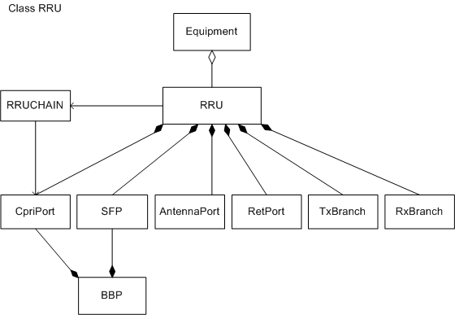
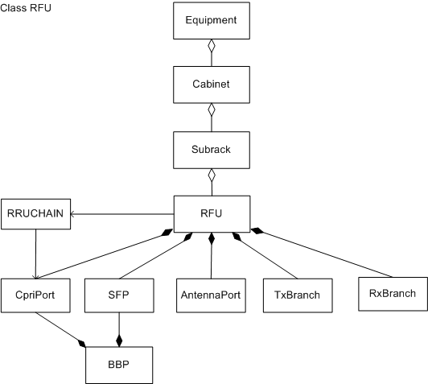
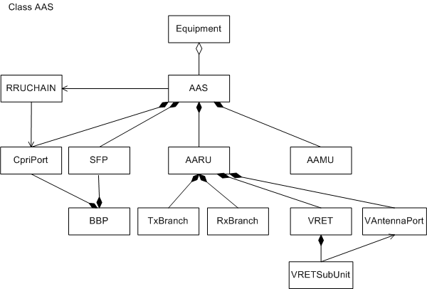
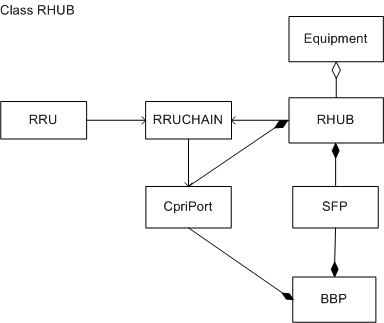

This section describes the functions and concepts of radio
frequency (RF) units, illustrates the managed object models (MOMs)
and the corresponding managed objects (MOs).
Managed Object Model
Figure 1 shows the RRU MOM, which is a subset of the eNodeB MOM.
Figure 1 RRU MOM

The RRU MOs shown in Figure 1 are described
as follows:
- Equipment defines an equipment
root object, which manages equipment-class MOs.
- RRU defines an RRU. The RRU
provides ports for communication with an BBP and processes uplink
and downlink RF signals.
- RRUCHAIN defines CPRI links
between an BBP and RRUs. RRUs can be connected in the form of chain
or ring. Ring topologies are classified into cold- and hot-backup
ring topologies.
- CpriPort defines a port
for communication between an BBP and an RRU. This port is used to
transmit user plane data and control plane data between the BBP and
the RRU.
- SFP defines an optical or electrical
module for optical-to-electrical conversion. This module transmits
signals between the RRU and other devices through optical fibers.
Information about the module is not configurable, but can be queried.
- BBP defines an BBP. This board
processes the uplink and downlink baseband signals and provides CPRI
ports for communication with RF units.
- AntennaPort defines
a port for connecting an RRU and an antenna line device (ALD).
- RetPort defines a port for
connecting an RRU and a remote electrical tilt (RET) antenna. The
RRU controls the RET antenna by exchanging RS485 signals.
- TxBranch defines a transmit
(TX) channel in an RRU.
- RxBranch defines a receive
(RX) channel in an RRU.
Figure 2 shows the RFU MOM, which is a subset
of the base station MOM.
Figure 2 RFU MOM

The RFU MOs shown in Figure 2 are described
as follows:
- Equipment defines an equipment
root object, which manages equipment-class MOs.
- Cabinet defines a physical
or virtual cabinet.
- A physical cabinet provides various functions such as power distribution,
environment monitoring, and surge protection, depending on the cabinet
type.
- A virtual cabinet is a container for subracks.
- Subrack defines the attributes
of subracks and related operations.
- RFU defines an RFU for a macro
base station. The RFU provides ports for communication with an BBP,
and processes uplink and downlink RF signals.
- RRUCHAIN defines CPRI links
between an BBP and RFUs. RFUs can be connected in the form of chain
or ring. Ring topologies are classified into cold- and hot-backup
ring topologies.
- CpriPort defines a port
for communication between an BBP and an RRU. This port is used to
transmit user plane data and control plane data between the BBP and
the RRU.
- SFP defines an optical or electrical
module for optical-to-electrical conversion. This module transmits
signals between the RRU and other devices through optical fibers.
Information about the module is not configurable, but can be queried.
- BBP defines an BBP. This board
processes the uplink and downlink baseband signals and provides CPRI
ports for communication with RF units.
- AntennaPort defines
a port for connecting an RFU and an antenna line device (ALD).
- TxBranch defines a transmit
(TX) channel in an RFU.
- RxBranch defines a receive
(RX) channel in an RFU.
AAS MOM
Figure 3 shows the
AAS MOM, which is a subset of the base station MOM.
Figure 3 AAS MOM

The AAS MOs shown in Figure 3 are described
as follows:
- Equipment defines an equipment
root object, which manages equipment-class MOs.
- AAS defines an active antenna
system, which consists of one Active Antenna Management Unit (AAMU)
and one to three Active Antenna Radio Units (AARUs).
- RRUCHAIN defines CPRI links
between an BBP and AASs. AASs can be connected in the form of chain
or ring. Ring topologies are classified into cold- and hot-backup
ring topologies.
- CpriPort defines a port
for communication between an BBP and an AAS. This port is used to
transmit user plane data and control plane data between the BBP and
the AAS.
- SFP defines an optical or electrical
module for optical-to-electrical conversion. This module transmits
signals between the AAS and other devices through optical fibers.
Information about the module is not configurable, but can be queried.
- BBP defines an BBP. This board
processes the uplink and downlink baseband signals and provides CPRI
ports for communication with RF units.
- AARU defines an AARU, which
provides ports for sending and receiving baseband and RF signals and
processes the uplink and downlink baseband signals.
- TxBranch defines a transmit
(TX) channel in an AARU.
- RxBranch defines a receive
(RX) channel in an AARU.
- VRET defines a virtual remote
electrical tilt (RET) antenna in an AARU.
- VRETSubUnit defines
a virtual RET subunit. Under this MO, users can specify connection
ports and set polarization types for these ports. All these ports
have the same uplink and downlink tilts.
- VAntennaPort defines
a virtual antenna port on an AARU. Each port corresponds to an RF
channel, which transmits RF signals.
- AAMU defines an AAMU, which
manages communication links between the AAS and BBU and manages AARUs
in the AAS.
RHUB MOM
Figure 4shows the
RHUB MOM, which is a subset of the base station MOM.
Figure 4 RHUB MOM

The RHUB MOs shown inFigure 4are described
as follows:
- Equipmentdefines an equipment
root object, which manages equipment-class MOs.
- RHUBdefines the RF unit hub,
which converges CPRI data at the remote end of RF units.
- RRUCHAINdefines a CPRI
link between a BBPand an RHUBor a CPRI link between an RHUBand an RRU.
- CpriPortdefines a port
for communication between a BBPand
an RHUB. This port is used to transmit
user plane data and control plane data between the BBPand RHUB.
- SFPdefines an optical or electrical
module which performs optical-to-electrical conversion to enable optical
transmission between an RHUBand
other devices. The information about an optical or electrical module
can be queried but is not configurable.
- BBPdefines a BBP. This board
processes the uplink and downlink baseband signals and
provides CPRI ports for communication with RF units.